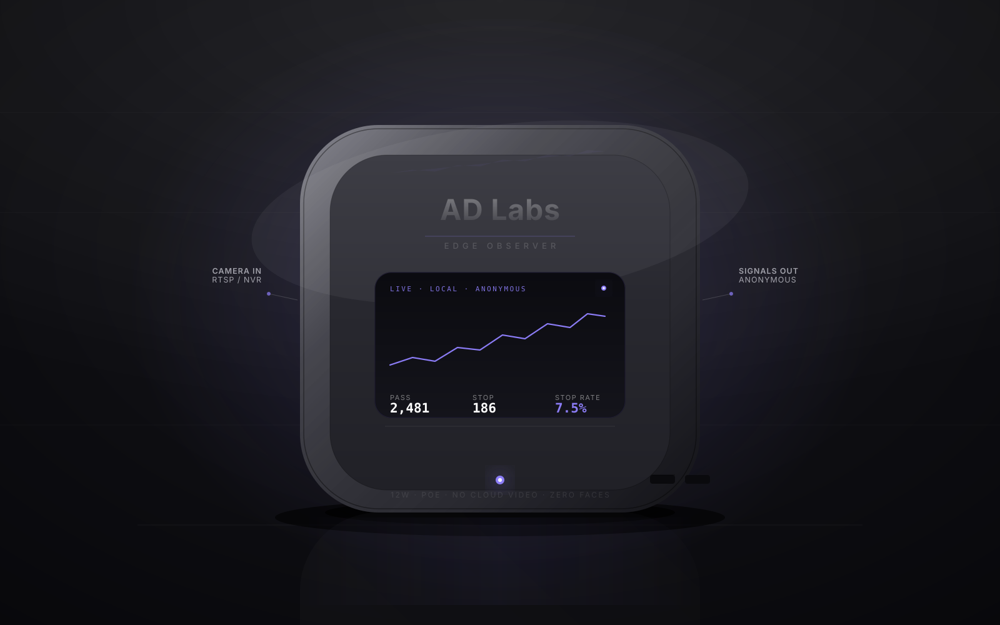

THE EDGE OBSERVER
THE INSTRUMENT
A 12W box that thinks on site
One Edge Observer unit plugs into the cameras you already own. Everything is processed on-device — no cloud video, no stored faces, ever.
- Plugs into your existing RTSP / NVR feed
- Runs offline — counts even when the internet drops
- Sleeps on a PoE cable; no new hardware, no network change
12W · PoE · on-device inference